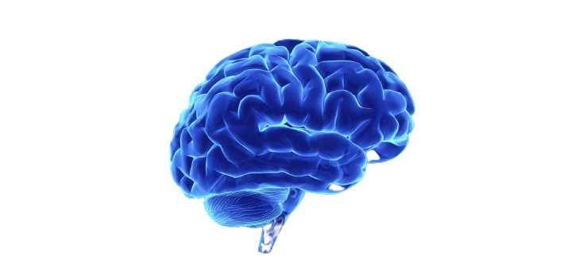

Eve
We all know that we are master of our own emotions, but with Eve, we can alwas feel comfortable mentally and physically.
Why Eve?
Eve is one of the minimalistic and simple tools out there which can be used as a personal guide for mental activities.
Mental Power
Been one of the minimalist and intuitive tools out there with a much cleaner UI/UX, using it would give you power beyond your mental ability..
Eve Features
Meditation
Mood Tracker
Exercises
What is your main focus?